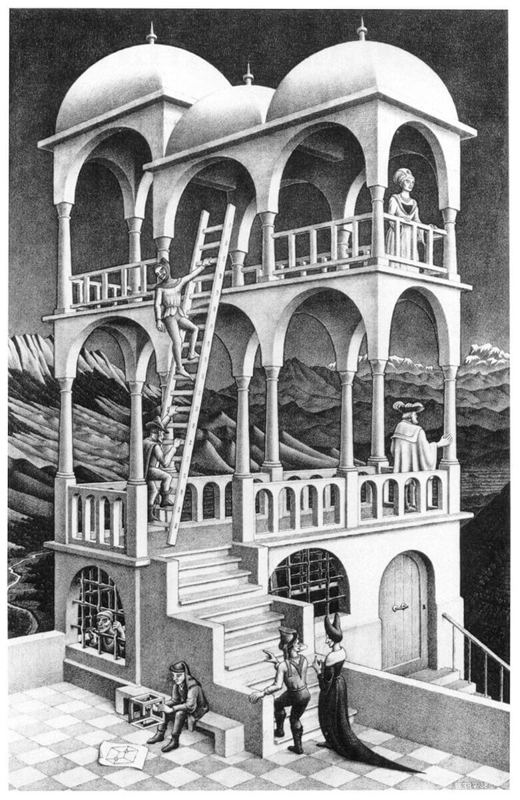
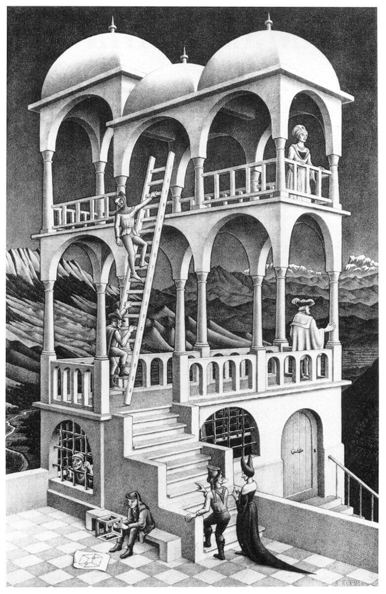

Escher e il piano iperbolico
Maurits Cornelis Escher
(1898 - 1972)
Escher al lavoro
Snakes (1969 - xilografia)
In Italia (1923-1935)

Figure impossibili
Figure impossibili
 

Matematica

Harold Scott MacDonald Coxeter

''..Though the text of your article on 'Crystal Symmetry and its Generalizations is much too learned for a simple, self-made pattern man like me, some of the text-illustrations and especially Figure 7, page 11, gave me quite a shock...''
''..Circle Limit I, being a first attempt, displays all sorts of shortcomings ... and leaves much to be desired... . There is no continuity, no "traffic flow" nor unity of colour in each row... ''
'' ..I do this with the strange feeling that this piece of work is a 'milestone' in my development,but that no one but myself will ever realize it...''
|


Uncinetto iperbolico